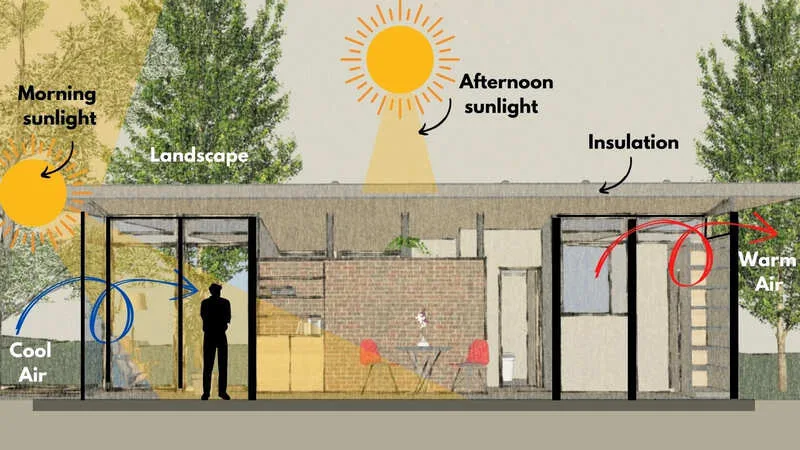

Expanded Nursing Uganda Explanation
Ventilation and lighting should be understood beyond a short definition. Link the concept to patient history, focused assessment, common risks, nursing priorities, documentation and evaluation of outcomes.
Contents, 15 sections (tap to expand)
01 Housing, Ventilation and Lighting
Housing is a critical component of the physical environment. Good housing protects against the elements, reduces the risk of disease transmission, and promotes physical, mental, and social well-being.
02 Housing in Relation to Health
The quality of housing has a direct impact on health. Poor housing conditions can lead to a range of health problems.
- Overcrowding: Facilitates the rapid spread of airborne infectious diseases like tuberculosis, influenza, and measles.
- Poor Ventilation & Dampness: Damp housing can lead to the growth of mold, which can trigger respiratory problems, allergies, and asthma. It is also linked to an increase in rheumatic conditions.
- Lack of Safety: Poorly constructed or maintained homes increase the risk of home accidents (e.g., falls, fires).
- Pest Infestation: Inadequate housing often harbors vermin like rats, cockroaches, and insects, which can spread diseases.
- Mental Health Impact: Small, dark, and overcrowded housing can negatively affect mental health, hinder children's development and study, and limit opportunities for recreation and hobbies.
03 COMPONENTS OF AN IDEAL HOME
- Main hut.
- Children’s hut, boys and girls separately.
- Visitors hut.
- Food store.
- Kitchen with raised fire place.
- Rest /relaxation hut.
- Animal’s hut/birds hut.
- A large enough compound.
- A ventilated pit latrine
- A bath shelter.
- A drying rack.
- A drying wire.
- A rubbish pit,
- Trees for shade wind breaking.
- A nearby water source.
- A flower garden.
- A wide road from the main road to the home.
- Main house with master bedroom with water carriage toilet system and a bathroom, sitting room, dinning, kitchen, three other bedrooms for boys, girls and visitors with another toileting system, a store, garage if necessary.
- Animals/birds shade or house.
- A wide compound.
- A drying line.
- A drying rack.
- Source of light.
- Water source, commonly tap water.
- A rubbish pit or dustbin.
- Compound trees and flower garden.
04 HOUSING
To protect the health of the community, every country has its laws about housing constructions and other buildings, and also laws regarding the sites on which the house should be built, its height, ventilation and sanitation and the building materials used.
Is the area of land on which the house is built?
- The place should not be near a swamp because mosquitoes and other insects breed in swampy places.
- The site should be slightly raised.
- Soil should be porous like gravel and chalk.
- There should be no overcrowding to provide enough space for free air circulation.
- Some big trees within the site are recommended for the provision of resting shade in hot winter and also act as wind break.
- There should be enough space for cultivation.
- The site should be near essential services such as school, Hospital, Market, clean water source, policing outposts.
- There should be a road within walk able distance from the site but not too near to the home to prevent home accidents.
- The attitude of the community in such area should be good.
- The security in such an area is important.
- The government’s policy concerning the area.
- A clean water source for domestic use.
05 BUILDING A HOUSE
The house should have a good foundation, the depth depending on the type of soil and the size of the house, there should be a separate place for cooking, eating, sitting/living and sleeping, arrangements for the toilets being water carriage system or pit or dry toilets made.
- Enough capital.
- Specious land with good quality soil.
- Slightly raised surface not sloppy.
- Nearby source of water for building and other domestic uses.
- Adequate man power.
- Accessible road for the vehicle which collects the building materials.
- The availability of the building materials.
- The location of electricity lines in rural areas.
- The governments consent to ensure that the land is not affected by future road plans in urban areas.
- The security of the place because the building may stop so prematurely.
06 Minimum Requirements for Healthy Housing
A healthy home should meet several basic requirements to protect and promote the health of its occupants.
The location of the house is fundamental.
- Should be on slightly raised ground to ensure good drainage and avoid being near swamps where mosquitoes breed.
- The soil should be dry and porous (e.g., gravel).
- Should be near essential services (school, market, clean water source) but not so close to busy roads as to pose an accident risk.
- There should be adequate space for air circulation, cultivation, and to prevent overcrowding.
- Foundation: Must be solid and appropriate for the soil type.
- Walls: Can be made of various materials. Concrete is durable and pest-resistant but expensive. Mud bricks are cheaper but require protection from termites and moisture.
- Floors: Must be kept in good condition, free from cracks that can harbor pests and germs. Cement or tile floors are easier to clean than mud floors.
- Roof: Should be sound and protect the interior from rain, wind, and sun. A ceiling with air space provides insulation, keeping the house cooler.
- Rooms: Should be high, airy, and well-lit. Each room needs adequate window space and air outlets for good ventilation. Windows should be screened to protect against insects.
- Kitchen: Must be well-ventilated to remove smoke, easy to clean, have a safe fireplace, and a clean water supply. There should be proper surfaces for food preparation and cupboards for safe food storage.
- Care of the Home: The house and furniture should be kept clean and in good repair. Bed linens should be washed frequently. Overcrowding should be avoided.
A healthy home must be free of pests that can transmit disease.
- Insects: Flies, mosquitoes, and cockroaches can be controlled by keeping the house and compound clean, disposing of refuse properly, and eliminating stagnant water.
- Rodents: Rats and mice are controlled by proper food storage and maintaining a clean environment.
- Creeping Plants: While plants and trees provide shade, they should be managed to not overshadow the house (making it damp) or provide a haven for snakes and other pests.
Should be a sound one and projected over the walls to protect the house from rain and wind and to shade the interior from sun rays. The roof may be made of corrugated iron sheets or thatch, the thatch is good in that it is cheapest and coolest but it harbors mites, ticks, rats and other insects. Corrugated iron sheets make the house hot and there should be a ceiling between the roof and the room, there should be air space between the ceiling and the roof protected against bats and the rats by the wire netting.
Rooms should be high and airy and well lit with plenty of window space and air outlets to ensure good ventilation. The windows and outlets should be protected from thieves, mosquitoes and other insects. Each room should have adequate sun light but not over heated. The wall may be concrete, concrete or blocks, mud or mud bricks. Mud walls harbors mites and other insects but they are cheap and should be protected from white ants and kept in good condition. Concrete walls are expensive but last longer.
The floor may be made of cement, tiles or mud, mud floor are cheapest. They must be kept in good condition e.g. Cracks harbors mites, ticks and other insects; they should not be smeared with cow dung as it attracts flies and breeds germs.
The kitchen should be well ventilated and lightened and easy to clean. Fire place should be raised of the ground and have chimney to take away smoke. The kitchen should have adequate clean water, a covered pail for holding waste, there should be table for preparing food and adequate cupboard for food and cooking utensils, food cupboard must have a door and be well ventilated.
This is formed by the roof projecting over the walls of the house. This keeps the house cool and shades the rooms, it also provides sitting out place in the evening.
07 HYGIENE OF THE HOME
- The house should be kept clean and regularly repaired.
- Furniture dusted daily and they should be adequate according to the family’s need.
- Table, chairs, cupboards, beds, can be made cheaply from home.
- Windows kept clean, they should be open and should be having curtains.
- Bed linens washed frequently and ironed.
- Overcrowding should be avoided.
A compound is the area around the house.
- It should be kept clean and tidy to prevent attracting flies.
- Flowers and some compound grass should be planted at the compound to make it attractive, less slippery during rainy season and also for dust strapping during windy season.
- The compound grass should be kept short to prevent snakes and other insects.
- Trees have to be planted to provide shade and to act as wind brakes but should not overshadow the house.
The compound should be well planned and have:-
- Small area for gardening.
- Exercise and recreation.
- Granaries for storing food and in good working condition.
- Should have houses for animals and chicken.
- A pit latrine, if there is no water carriage system latrine and the pit latrine should be 10 meters away from the housings.
- A rubbish pit dug 30 meters away from the home.
08 EFFECTS OF POOR HOUSING
Small, dark, overcrowded and poorly ventilated housing contribute to poor health in the following ways:-
The spread of infectious diseases are more common especially the air bone diseases like Tuberculosis and influenza.
- It makes an individual more liable to diseases and effects of illness.
- Vermin like lice, scabies mite are more easily spread.
- Damp housing leads to increase in rheumatic conditions.
- Home accidents are more common in homes with poor housing.
- Work and study for children is more difficult, this affects their development and their progress suffers.
- Hobbies such as reading needle work and drawing cannot be satisfied, there is a higher child mortality rate.
09 LIGHTING
Good natural and artificial lighting is important in houses and working places.
There are two types of types of lighting:-
- NATURAL LIGHT.
- ARTIFICIAL LIGHT.
- This is sun light, it’s the best kind of light and is also important for health.
- Sunlight makes the room bright, pleasant and dry showing up dusts and dirt encourages cleanliness of the home.
- Good natural light in a home helps reduce home accidents therefore windows should be placed in such a way as to provide maximum natural light.
- Natural light provides warmth.
- Sunlight acts on ergo- sterol in the skin and helps in the formation of vitamin D.
- It gives a feeling of wellbeing and stimulates the mind and body.
- It kills many germs and prevents the growth of others.
- To have good natural light, the room should have sufficient window space and windows placed in such a way as to give maximum light. The window should be kept clean.
- Walls and ceiling should be painted with light colors to allow good reflection of light.
The main sources are electric light, oil lamps and candles.
This is the best form of artificial light from filament lamps of fluorescent tubes. It gives a good light, it’s clean and has no naked flame, doesn’t flicker and does not use up oxygen or add carbon dioxide or water vapor to air.
NB. All electric equipment must be switched off before cleaning. It must be kept dry and never touched with wet hands as electricity passes through water.
These consist of reservoir containing paraffin so and cotton wick. The paraffin soaks up the wick and on lighting produces flame. They are portable and can be carried from one place to another.
They are made of wax with a wick in the center, they are useful in emergency. Oil lamps and candles give a poor light which is hot and constantly flickers. They are hazardous as they have naked flames, they also darken the walls and ceiling of rooms, they add impurities to the air such as carbon dioxide, moisture, heat and soot formation, they use up oxygen.
10 AIR AND VENTILATION
Air is a mixture of gases surrounding the earth.
- Oxygen 20%
- Carbon dioxide 0.03%
- Nitrogen 79%
- Water vapor {in small amount but varies}
- Others gases 1%
Oxygen is essential for life and for all forms of combustion e.g. breathing, and burning.
Carbon-dioxide is a heavy gas which is a mixture carbon and oxide.
Carbon-dioxide is produced by:
- -Respiration of man and animals.
- -Burning of all fuels.
- -Decaying organic matter, plants or animals, plants absorb it during day light, they retain the carbon and set free the oxygen.
This gas forms the bulk of air; it has no effect on man but serves to dilute the oxygen in the atmosphere and checking the rate of combustion.
This is water in the form of gas and comes from:
- -Expired air.
- -Evaporation from water surfaces such as rivers and lakes and from moist surfaces such as skin, plants and wet clothes.
- The air has a weight and volume; it can support a bird and an aero-plane.
- Air pressure falls steadily away from the earth’s surface it is also essential lessened by the heat and moisture so that it rises until in high altitude it is cooled and descends again, thus we have a constant circulation of air causing winds.
- The instrument for measuring air pressure is called a barometer.
- Fresh air is cool, it moves a little and is free from harmful germs and other impurities. It allows the body to maintain its normal temperature by evaporating the sweat and it gives a feeling of wellbeing.
- Respiration of animals and man -Where oxygen is reduced and carbon-dioxide, water vapors and germs are increased as in respiration of man and animals.
- Burning of fuels -Burning fuels such as oil lamps, candles, charcoal, and fire wood heat add impurities such as soot and smoke to the air.
- Industrial waste -Impure gases and fumes from factories far and refineries.
- Organic matter -From animals or planted such as skin feathers, skin, feathers, furs dust from dust forms, Hay or cotton.
- Inorganic matter -Inorganic matter such as lime, soot, and smoke.
- Decaying matter -Decaying matter such bad food, and vegetables excreta, which give rise to bad smell and add germs and other impurities to air.
- In a Hospital ward -Organic matter such as dirty linen sluices, specimens and other discharge from wound also contaminates air.
- RAIN - Wash away impurities.
- SUN - Dries and warm the air, kills germs and prevent its growth.
- WIND - Dilute and mix the atmospheric gases, impure air rises and cool, fresh air takes its place.
- PLANTS - Absorbs carbon-dioxide during the day light and set free oxygen to air.
- OXIDATION -Oxygen in the air neutralizes some impurities such as soot, dust, germs and makes them harmless.
11 VENTILATION
Ventilation is the maintaining of the atmospheric conditions within homes, work places and places of entertainments, so that air inside is kept as near as possible to the freshness of the outside atmosphere.
In a well-ventilated room, the air moves gently, it is cool and free from harmful germs and other impurities.
This is very important for health, it keeps the air fresh and supplies the oxygen needed for the body.
It also helps to maintain normal body temperature by evaporating the sweat on the skin, it reduces the spread of infections such as common cold, influenza, bronchitis and pulmonary tuberculosis.
- Natural ventilation. This is used in most domestic dwellings where air enters through the windows and doors and as the air circulates and becomes contaminated, it becomes hot and then it rises and escapes through air outlets high on the walls and near the ceiling, meanwhile the fresh air from outside gain entrance into the room to replace the used up one.
- Artificial ventilation. This is achieved by mechanical means by use of fans which keeps the air moving and cool or air conditioning where fresh air is forced into the building used up air is forced out. Artificial air is commonly used in operating theatres and large buildings where many people congregate such as cinemas and theatre.
- The air from outside must be fresh,
- The compound must be kept clean with proper disposal of refuse and excreta.
- Dustbins for waste must be available and kept covered.
- The house should be surrounded by grass so that less sunlight is reflected.
- Some shade trees help to provide shade to the house, protecting it from the sun rays and reduce the temperature of the rooms.
- Plants, shade trees and grass also absorb carbon dioxide during day light and set free oxygen in exchange.
- Animals should not be allowed in the house.
- The house must be kept clean and overcrowding avoided.
- There must be adequate window space with the windows facing each other to allow cross ventilation, air outlets should be high in the walls near the ceiling because hot stagnant air rises and is replaced by fresh air.
- The ceilings and walls inside and outside the house should be painted with light colors so that less heat is absorbed and the rooms kept cool.
- There should be adequate space between beds to allow air to circulate.
- Visitors should be restricted to avoid using up oxygen.
- Proper management of dirty linen, sputum mugs, bed pans, dirty dressings and discharges.
- Air outlets like doors, windows should be open most of the times, and must be kept open both during day and night in Tuberculosis ward.
- In a badly ventilated room, the air is not moving. It becomes stagnant, full of water vapor, germs and other impurities. The oxygen becomes less and carbon dioxide increases, the temperature of the air is raised and it becomes hot.
- Normally the body is cooled by the evaporation and the body temperature increases where ventilation is poor and no evaporation is taking place. Therefore where evaporation in inhibited the impacts are great discomfort with sleeplessness, headache, faintness and nausea.
- Respiratory infections such as common cold, influenza, bronchitis and pulmonary tuberculosis are more easily spread.
- People living in such conditions have lowered resistance to infections; they may also suffer from fatigue and have poor health.
- List three health problems associated with poor housing conditions.
- What are four key factors to consider when selecting a site for building a house?
- Explain the difference between natural and artificial ventilation and give an example of where each is used.
- Why is sunlight considered the best form of lighting for a home? Provide three reasons.
- What are two ways that air can become contaminated in a home environment?
12 Nursing Uganda Clinical Lens
Use Housing as a practical nursing topic, not only a memorized definition. Link cause, transmission, incubation, clinical features, treatment support and prevention.
- What to understand first: define housing, identify the normal or expected pattern, then explain what changes when the patient is unwell.
- Why it matters in care: the nurse must recognize risk early, explain findings clearly, document accurately and know when to escalate.
- How to revise it: connect each point to assessment, nursing diagnosis or care problem, intervention, rationale and evaluation.
13 Assessment Guide
- Temperature, pulse, respiratory status, hydration, pain, rash, wounds, stool, urine or sputum changes.
- Exposure history, travel, contacts, vaccination status and comorbidities.
- Specimen orders, isolation needs, antimicrobial history and danger signs.
14 Nursing Priorities, Rationales and Outcomes
- Use standard precautions and transmission-based precautions where needed.
- Support hydration, nutrition, medicines, monitoring and early referral for severe disease.
- Teach prevention, adherence, hygiene, safe water, vector control or contact tracing as relevant.
The rationale for these priorities is patient safety: nursing actions should prevent deterioration, reduce discomfort, support recovery and create clear evidence for the next caregiver.
- Expected outcome: Symptoms improve, complications are detected early, transmission risk is reduced and treatment is completed correctly.
15 Patient Teaching and Revision Check
- Explain housing in simple language the patient or caregiver can repeat back.
- Teach warning signs, medicine or follow-up instructions, hygiene or lifestyle points where relevant.
- For exams, prepare a short answer using: definition, causes or risk factors, signs, assessment, management, complications and prevention.
- For ward practice, document baseline findings, actions taken, patient response and the plan for review.
Illustrations and Diagrams (3)



Related Video Lectures
Watch nursing lecture videos on YouTube for this topic. Opens in a new tab.
Watch on YouTubeExternal link: YouTube may use its own cookies and terms. Nursing Uganda is not affiliated with YouTube.